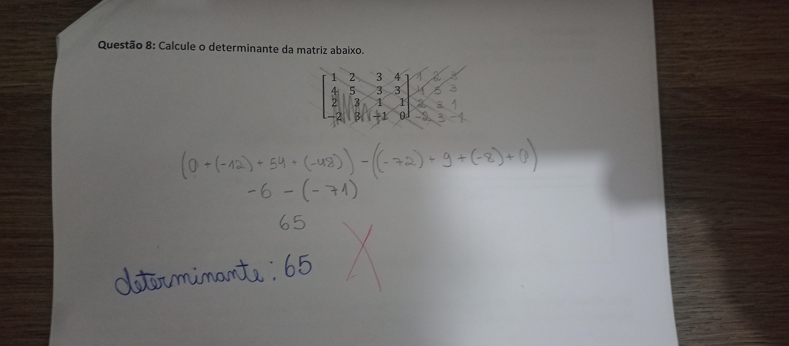

Eu entendi como anuidade, uma quantidade de pagamentos feita de forma constante e que não necessariamente é feita "anualmente", pode ser feita também mensalmente, por exemplo. Existem dois tipos principais de anuidades:
Para calcular, temos 2 fórmulas :
M = P [(1 + i)^n - 1] / i
Onde:
P São prestações pagasi taxa de jurosn Tempo/PeriodosM = C (1+i)^n > C = M / (1+i)^n
Onde:
M é o montanteC é o capitali é a taxa de jurosn é o tempo/periodoExemplo resolvido retirado do material da professora Valéria Lessa
Eu entendi por amortização o processo de "acabar" com uma dívida, contando assim, com parcelas do valor principal, bem como os juros que serão aplicados.
Captura de tela retirada do material da professora valéria Lessa
Vamos supor que você pegou um empréstimo de R$ 5.000 a uma taxa de juros de 6% ao ano, e deseja pagar em 10 meses com parcelas fixas.
Usando a fórmula :
P = 5000 × [0.06 / 12 / (1 - (1 + 0.06 / 12)^-10)]
Calculando isso, obtemos:
P ≈ R$ 522,22
Matrizes foi um conteúdo em que eu senti bastante dificuldade pruncipalmente por eu demorar para entender a aplicação na vida real/prática. No começo eu não tinha criado interesse, mas aí fui pesquisar mais a fundo sobre a importância do estudo das matrizes para a área da programação e consegui ter mais vontade de estudar. Assim, por matriz entendi que : É uma "tabela" de números em ordem de linhas e colunas. Onde os números são os elementos; cada elemento é "chamado" por um índice linha-coluna.
A soma de duas matrizes é realizada somando os elementos correspondentes de cada uma. Para que essa soma seja possível, as duas matrizes devem ter a mesma dimensão.
Dadas duas matrizes A e B de dimensões m × n, a soma C é :
C[m][n] = A[m][n] + B[m][n]
Onde:
C[m][n] é o elemento da matriz resultante na posição de ordem (m, n)A[m][n] e B[m][n] são os elementos
A e B nas posições de ordem (m, n)A e B:
| Matriz A | Matriz B | Matriz C (Resultado) |
|---|---|---|
1 2 |
4 5 |
5 7 |
3 4 |
6 7 |
9 11 |
A soma C = A + B resulta em :
5 7 |
9 11 |
Subtrai-se os elementos correspondentes em ordem de ambas as matrizes. Também é necessário ter a mesma dimensão.
A e B:
| Matriz A | Matriz B | Matriz C |
|---|---|---|
5 7 |
1 2 |
4 5 |
9 11 |
3 4 |
6 7 |
A subtração C = A - B dá o resultado :
4 5 |
6 7 |
A multiplicação de matrizes foi a minha predileta, mas também a mais difícil. Para poder multiplicar matrizes, elas devem ter o número de colunas (da primeira matriz) igual ao numero de linhas da segunda matriz. ficando assim : y n = n x. A matriz que terá o resultado terá o numero de linhas da primeira matriz e o número de colunas da segunda.
A e B:
| Matriz A | Matriz B | Matriz C |
|---|---|---|
1 2 |
5 6 |
17 22 |
3 4 |
7 8 |
39 50 |
Para calcular a matriz C = A × B
C[1][1] = (1 × 5) + (2 × 7) = 5 + 14 = 17
C[1][2] = (1 × 6) + (2 × 8) = 6 + 16 = 22
C[2][1] = (3 × 5) + (4 × 7) = 15 + 28 = 43
C[2][2] = (3 × 6) + (4 × 8) = 18 + 32 = 50
É a operação que vai trocar as linhas pelas colunas ou ao contrário. Tem um número elevado à uma potência.
O exemplo acima foi retirado da prova feita em dupla em que eu realizei-a com meu colega Arthur. A questão foi corrigida e está correta.
Pesquisando melhor sobre qual a função de um determinante na prática, vi que eles são utilizados para a resolução de sistemas lineares na matemática ou em áreas que irão utilizar desse conhecimento. Ele é calculado por meio de uma matriz quadrada (e se não for quadrada, ela é transformada em uma através de regras).
Para uma matriz 2 × 2, o determinante é calculado da seguinte forma:
A :
A = | a b | |
| c d | |
O determinante de A, det(A), é :
det(A) = a × d - b × c
Exemplo :
1 2 |
3 4 |
Cálculo pra achar o determianante :
det(A) = (1 × 4) - (2 × 3) = 4 - 6 = -2
Então o det(A) é : -2.
Para uma matriz 3 × 3, o determinante pode ser calculado usando a
Regra de Chió (ou Regra de Sarrus) para matrizes 3x3.
Revendo o material e pesquisando mais na internet também tem a regra de Crammer
mas nós trabalhamos na de Chió e ela é mais fácil também.
Utilizando a regra de Chió, nós fazemos a seguinte operação com a matriz :
no exemplo acima, também retirado da prova, eu acabei me confundindo na resolução e errei o cálculo, contudo, deu para entender o que tem que ser feito para achar o determinante : "Aumentar" o número de colunas e linhas (copiando as primeiras) até que se torne uma matriz quadrada.
Eu sinceramente não achei esses conteúdos difíceis, sei que se eu tivesse prestado mais atenção, me interessando mais, eu teria entendido melhor e tirado uma nota maior na prova. Ao que se refere ao conteúdo passado em si, eu achei que foi bem tranquilo, não foi nada muito pesado, em cada aula nós viamos um pouco, e tinhamos tempo para resolver os exercícios. Gosto muito da abordagem da professora em buscar trazer um sentido na prática/vida real da função de cada conteúdo passado.